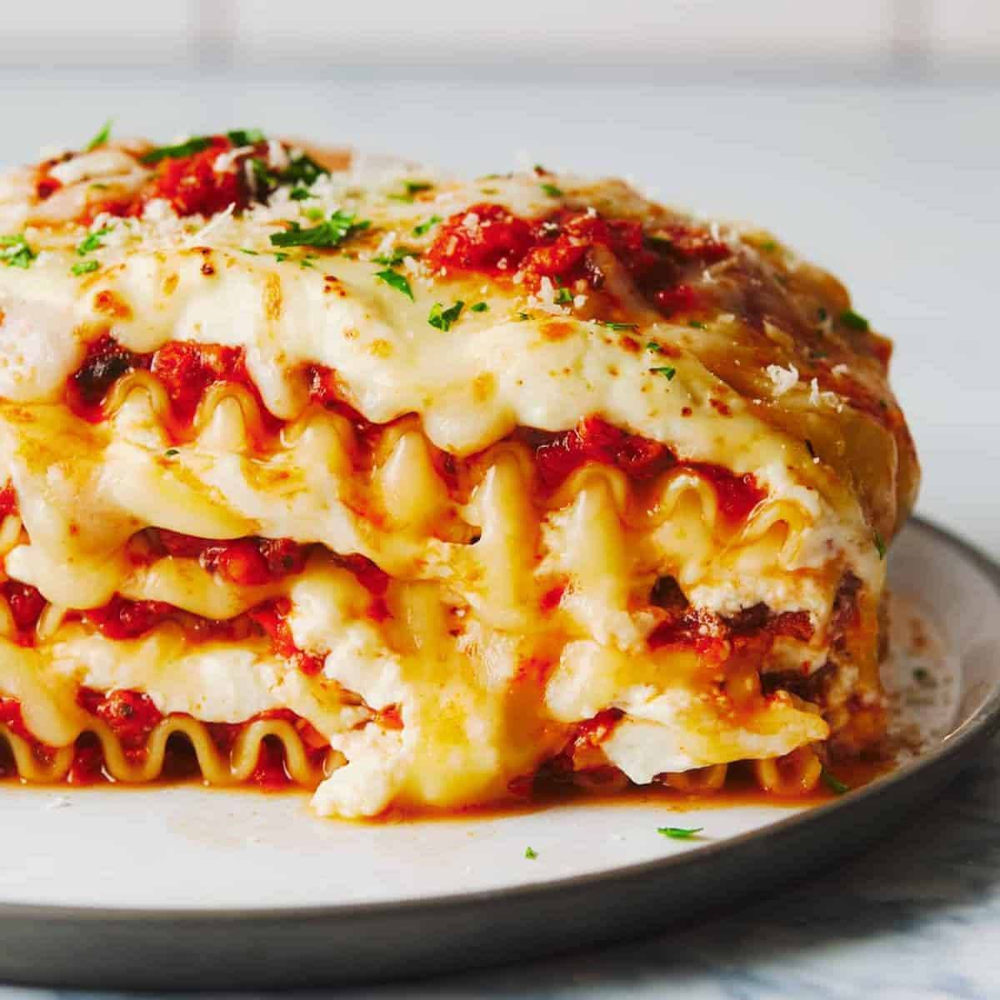

Lasagna

Lasagna is delicous and can heal any trouble of the soul
Ingredient
- 4 cloves garlic
- 1 onion, peeled and cut into chunks
- 2 medium carrots, cut into chunks
- 8 ounces fresh mushrooms
- 1 cup walnuts
- 1 small zucchini, cut into chunks
- 2 tablespoons butter or olive oil
- 1 teaspoon oregano
- 1 teaspoon Italian seasoning
- 1–2 teaspoons kosher salt + black pepper to taste
- one 24-ounce jar of your favorite tomato sauce
Steps
- Place the mushrooms, walnuts, and zucchini in a food processor.
Pulse a few times until the mixture is very finely chopped.
Transfer to a bowl. Repeat this process with garlic, onion, and carrots.
- Heat butter or olive oil over medium high heat.
Add your chopped veggies along with the spices.
Sauté for 7-10 minutes until very soft and fragrant.
Add tomato sauce and salt; stir to combine. Taste and adjust!
Your seasoning amounts will depend on your brand of sauce.
- Preheat the oven to 400 degrees. Mix mascarpone cheese with grated garlic and salt.
- Start with spreading a layer of sauce in the bottom of a 9×13 pan. Then, layer in the following
order for each layer: a few noodles, 1 cup sauce, a few dollops of mascarpone, 1/2 cup Parmesan,
1/2 cup mozzarella, and repeat (I usually get 4 layers out of this amount). End with noodles, sauce,
cheese, and dollops of extra sauce on top to make it pretty.
- Cover with foil and bake for 40-45 minutes. Remove foil and broil for 5 minutes to get the
cheese browned on top. Let stand for 10 minutes or so, then cut and serve!